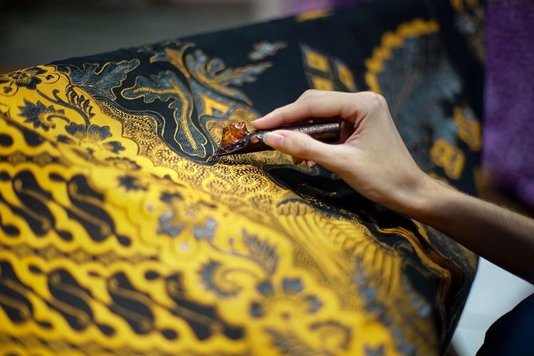

MEDIA PEMBELAJARAN
Berbasis Website
Sejarah Batik Solo
Sejarah Motif Batik Solo dan Penjelasannya —Solo merupakan sebuah kota ramai yang berada di wilayah provinsi Jawa Tengah. Sebagai kota yang masih masuk dalam Karesidenan Surakarta, Solo masih sangat lekat dengan budaya Jawa. “The Spirit of Java” merupakan slogan yang dimiliki kota ini yang menunjukkan sebuah tekad mengakar untuk melestarikan budaya Jawa.
Selain dikenal dengan kekentalan adat Jawa, Solo juga dikenal sebagai ikon batik. Motif batik solo yang dihasilkan pun beragam dan akan dijelaskan pada paragraf selanjutnya dari artikel ini. Bahkan batik solo kini lebih populer melalui lini produsen batik keris yang sudah merambah pangsa pasar luar negeri. Tidak mengherankan jika batik Solo menjadi salah satu tujuan yang wajib dikunjungi oleh para wisatawan ketika berkunjung ke kota Surakarta hadiningrat. Untuk wisata batik solo anda dapat melakukannya di kampung batik Laweyan, juga kawasan kampong batik Kauman. Kampung Laweyan merupakan sentra atau pusat kegiatan batik bermula, kegiatan membatik sudah menjadi budaya sehari-hari bagi masyarakatnya, dan biasanya diturunkan dari leluhurnya.
Batik dengan segala bentuknya merupakan identitas bangsa kita, Indonesia. Pada era keraton tempo dulu, kegiatan membatik merupakan mata pencaharian bagi para wanita Jawa, bahkan kegiatan membatik dilingkungan keraton surakarta sangat dikenal sebagai suatu pekerjaan yang eksklusif. Batik Solo memiliki ciri khas, baik dalam proses cap maupun tulisnya. Pewarna yang digunakan untuk membatik menggunakan bahan alam, yaitu soga. motif batik solo sidomukti dan motif batik solo sidoluruh merupakan contoh pola batik tulis Solo yang terkenal.
Motif batik memiliki makna tersendiri, lain motif lain makna. Motif batik Solo yang diciptakan beraneka ragam, dengan harapan dapat membawa kebaikan bagi pemakainya. Motif batik solo yang dikenal antara lain yaitu, motif batik solo jenis parang, motif batik solo jenis barong, motif batik solo jenis kawung dan motif batik solo jenis sawat.
Motif batik ini dianggap sakral dan hanya dipakai oleh raja dan keluarganya.

Motif Batik Solo Slobog
Slobog berarti longgar/besar. Batik solo ini biasa dipakai untuk melayat. Makna yang terkandung di dalam motif batik ini agar arwah seseorang yang meninggal tidak mendapat halangan dan dapat diterima kebaikannya.

Motif Batik Truntum
Batik solo Motif truntum ini biasanya dipakai oleh orang tua pengantin. Truntum sendiri berarti menuntun, Jadi dimaksudkan agar dalam sebuah pernikahan orang tua selalu menuntun anaknya dalam mengarungi hidup baru sehingga kelak menjadi keluarga yang sakinah.


Motif Batik Satrio Manah
Batik solo motif satrio manah ini biasa dipakai oleh wali pengantin pria pada saat prosesi lamaran/meminang. Makna dari motif batik ini supaya lamaran dapat diterima oleh pihak calon pengantin wanita beserta keluarganya.

Motif Batik Semen Rante
Dalam proses lamaran jika wali pengantin pria memakai batik solo motif Satrio Manah maka untuk pihak pengantin wanita memakai batik solo motif Semen Rante. Arti dari kata rante itu sendiri lebih menyiratkan kepada sebuah ikatan atau pertalian yang kokoh, so harapan bagi yang mengenakannya adalah jika lamaran dari mempelai pria diterima, maka pihak calon mempelai wanita mengharapkan sebuah pertalian yang kokoh dan kuat terhadap segala godaan hingga maut memisahkan.

Motif Batik Parang Kusumo
Batik solo motif parang kusumo ini biasanya dipakai oleh pengantin wanita pada saat upacara tukar cincin. Kusumo berarti bunga yang sedang mekar. Hakikatnya pengantin wanita sudah siap lahir maupun bathin menikah.